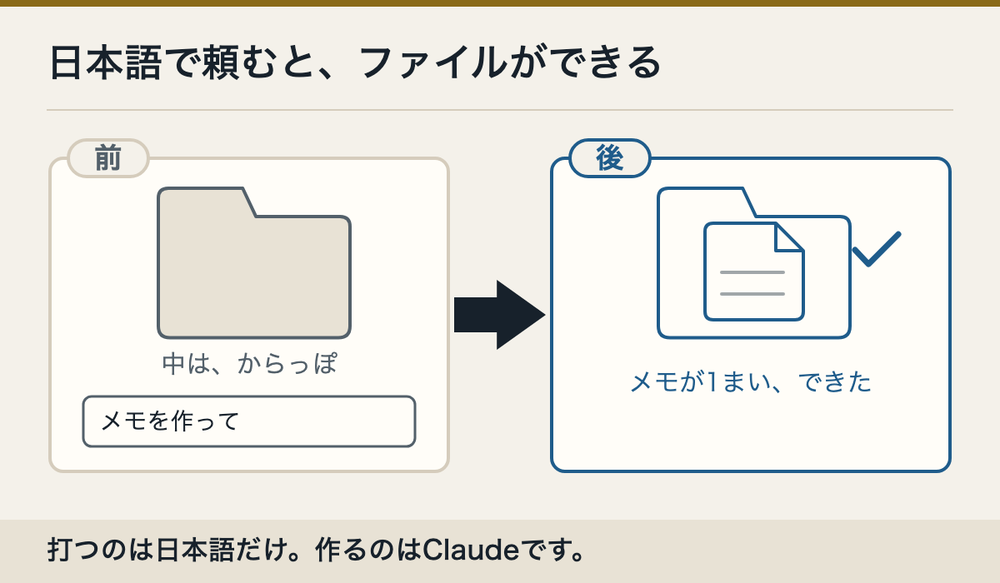
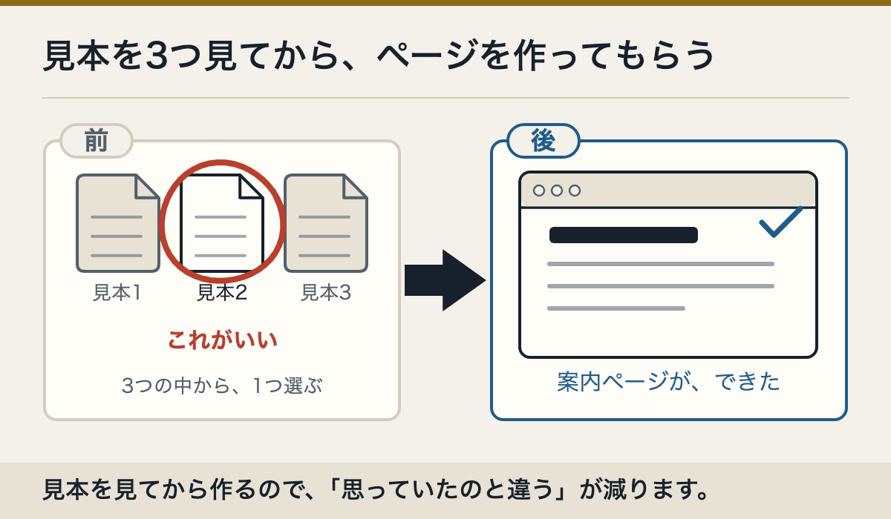
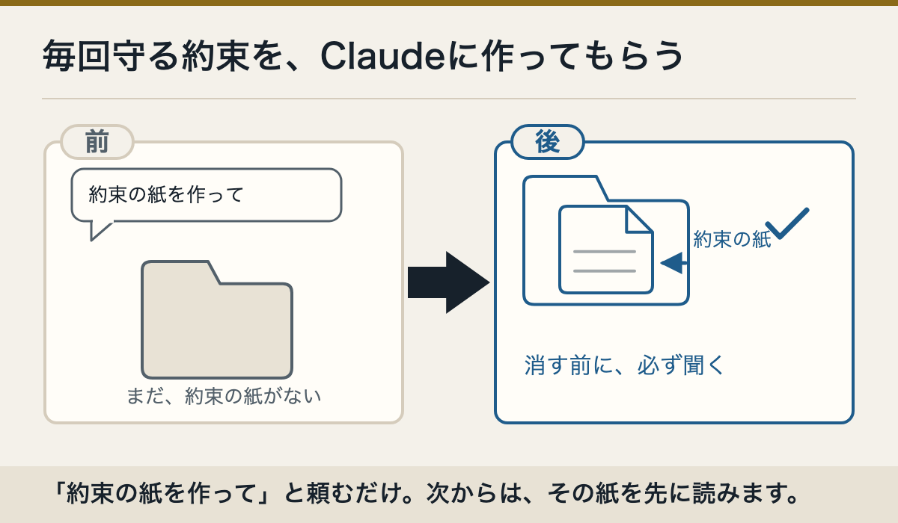

自分のことを書くメモ
このフォルダに、自分のことを書いたメモを作ってください。書く前に、私へ5つ質問してください。
小さな案内ページ
このフォルダに、［好きなもの］を紹介する、簡単なページを作ってください。作る前に見本を3つ出してください。
毎回守る約束を作る
公式に例があります。CLAUDE.mdは、Claudeに作ってもらえます。
CLAUDE.mdは、このフォルダで毎回守る約束を書いたメモです。
このフォルダで毎回守る約束を、CLAUDE.mdに作ってください。削除や上書きの前は、必ず私に確認する約束を入れてください。
この頼み方でCLAUDE.mdができることは、ツバキリ商会で空のフォルダを使って確かめました。ほかの設定やAIの部下も、同じように「作って」と頼めます。
ただし、公式の作り方としては見つかっていません。うちで試したときは、Claudeが中身を考えたあと「ファイルを作っていいですか」と聞いてきて止まりました。「許可」を押した先は、まだ確かめていません。